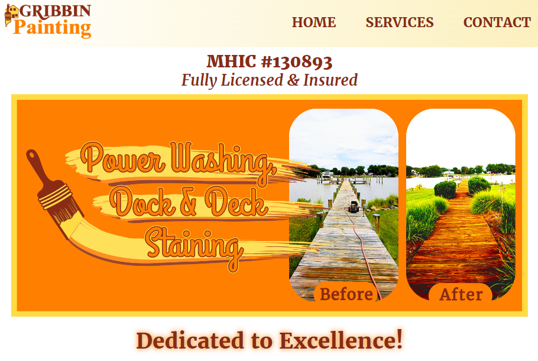

My name is Ryan Wilson. I'm a graphic and web designer with skills in responsive web design and content creation.
I am seeking employment as a graphic or web designer. I am passionate about DRY, responsive coding using HTML5, CSS3, and JavaScript, as well as skillful content creation with Adobe software.
#1 - Kevin Wilson Bridge Professional Website This website was created in 2017. I used Visual Studio Code, Adobe Photoshop, and Adobe Illustrator. I created this website without collaboration. This site was not created for a class.I created this website for Kevin Wilson who was seeking a professional website to showcase his services as a professional bridge instructor. I aimed to create a website with a card player theme and implemented a red, black, and white color scheme as a result. I used a slideshow on the home page to highlight the “Bridge-IQ” app and showcase what customers could expect from utilizing Kevin as an instructor. I created a logo in Adobe Illustrator using a stock image and some effects on the text to achieve a layered look that is reminiscent of a deck of cards.
#2 - Gribbin Painting Website This website was created in 2017. I used Visual Studio Code, Adobe Photoshop, and Adobe Illustrator. I created this website without collaboration. This site was not created for a class. I created this website for Tim Gribbin who is the owner and operator of Gribbin Painting. The logo for Gribbin Painting includes maroon, orange, and yellow hues which I also used as the primary colors for the website. I created the slideshow images using Adobe Photoshop and Adobe Illustrator. I created graphic links for the various services Tim offers and incorporated swipes of paint to reinforce the painter theme. I wanted potential customers to be aware of the excellent quality of Tim’s work and used specific verbiage and before and after photos that attempted to communicate this fact. The strong use of the primary colors was also used to reinforce the artistic painter theme.

#3 - U.S.A. Themed Stamp Design 1
This graphic was created in 2022. I used Adobe Illustrator. I created this graphic without collaboration for my Illustration Graphics course at UMGC.This stamp design was created with a United States of America theme and aimed to communicate the joy of freedom that is offered in the country. Hues of red, white, and blue were used because of the country's national colors. I used the pen tool in Adobe Illustrator to create a face with a head tilted upward with a peaceful look of relaxation and wonder to reinforce the concept that the U.S. is a place where one can succeed and create a life for themselves without fearing tyranny or influence from absolute leadership. The numerous rectangles in the design provide an interesting textured look and cater to the symmetrical design I created.

#4 - U.S.A. Themed Stamp Design 2
This graphic was created in 2022. I used Adobe Illustrator. I created this graphic without collaboration for my Illustration Graphics course at UMGC.
This stamp design was created with a United States of America theme. The words land of the free, home of the brave are from the country's national anthem and a well-known tag line. Shades of red and blue were used to reinforce the U.S.A theme because of the country's national colors. I used a city scene and a farm scene to create balance in the design and showcase the versatility of the landscapes in the country. Gradients were used in the text and in some of the vector shapes to make the design more interesting. The gradients used in the vector shapes also make the skies more realistic-looking as they are reminiscent of skies in the real world that are influenced by the light of the sun.

#5 - Children's Coloring Book Page - Black & White Version
This graphic was created in 2023. I used Adobe Illustrator. I created this graphic without collaboration for my Illustration Graphics course at UMGC.
This graphic was designed to be included in a children's coloring book which is why I chose a cartoon-like bug in a surreal landscape. The shapes in the sky add a sort of texture and balance to the piece. The big cartoon bug and cherries are the focus of the piece and are meant to cater to a child's imagination. I added the river, grass, and flower to go with the overall theme of nature and outdoors. I used some distorted text in the top-left for the title of the piece, “Cherry Bug”. The drips coming off the cherries are in attempt to make them look more appealing to the “cherry bug”. The flower in the lower corner adds some versatility to the otherwise simple landscape background. This is the version of the coloring book page before it is colored in.

#6 - Children's Coloring Book Page - Color Version
This graphic was created in 2023. I used Adobe Illustrator. I created this graphic without collaboration for my Illustration Graphics course at UMGC.
This graphic was designed to be included in a children’s coloring book which is why I chose a cartoon-like bug in a surreal landscape. The shapes in the sky add a sort of texture and balance to the piece. The big cartoon bug and cherries are the focus of the piece and are meant to cater to a child’s imagination. I added the river, grass, and flower to go with the overall theme of nature and outdoors. I used some distorted text in the top-left for the title of the piece, “Cherry Bug”. The drips coming off the cherries are in attempt to make them look more appealing to the “cherry bug”. The flower in the lower corner adds some versatility to the otherwise simple landscape background. This is the version of the coloring book page before as it may look after is filled with color.

#7 - Yosemite National Park Poster
This graphic was created in 2023. I used Adobe Illustrator. I created this graphic without collaboration for my Illustration Graphics course at UMGC.
This graphic was created for an assignment that was supposed to be an advertisement for a national park. The minimalistic style of the poster puts an emphasis on the beauty of the natural features of the park which include lush forests, large clear lake water, and big bold rock formations. I used a gradient in the sky to mimic the light of the sun and used a mirror image on the lake to mimic a reflection of the forest trees in the water. A playful font was used for the Yosemite National Park text to influence a feeling of fun and excitement that a potential park-goer may experience.